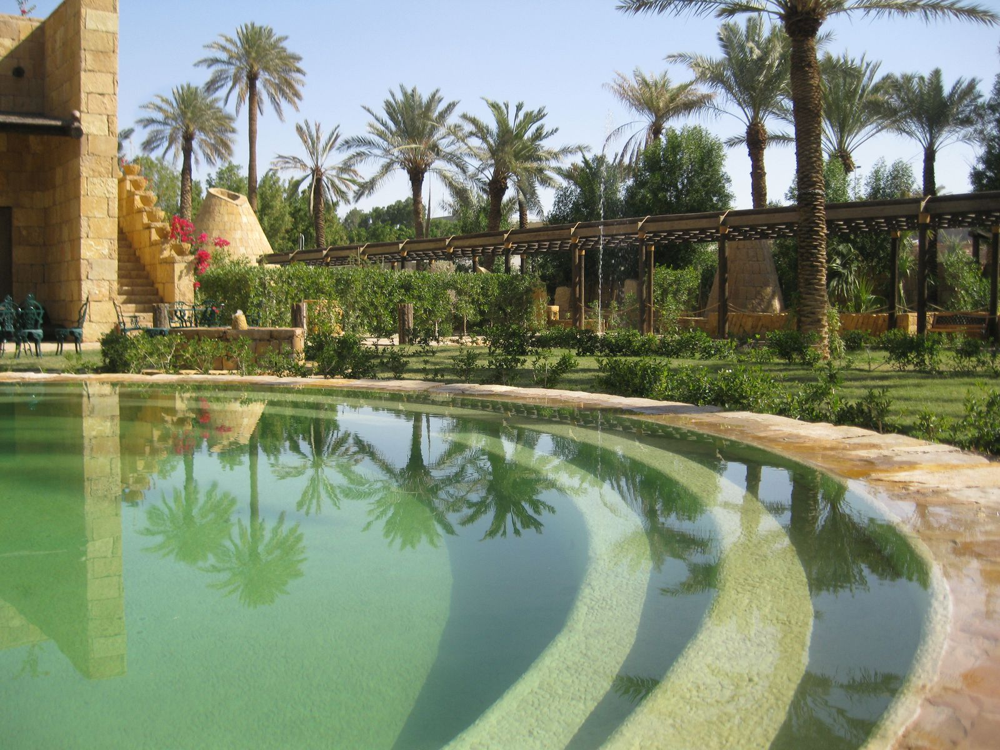

Travel
Once a mudbrick waystation along desert trading routes, Riyadh is now one of the wealthiest cities in the world.
The country’s political, financial and administrative capital is also a city with a fascinating subtext.
History
Riyadh (/rɨˈjɑːd/; Arabic: الرياض ar-Riyāḍ pronounced [arːiˈjɑːdˤ],"The Gardens") is the capital and largest city of Saudi
Arabia. It is also the capital of Riyadh Province, and belongs to the historical regions of Najd and Al-Yamama. It is
situated in the center of the Arabian Peninsula on a large plateau, and is home to 5,254,560 people, and the urban
center of a region with a population of close to 7 million people.
The city is divided into 15 municipal districts, managed by Riyadh Municipality headed by the mayor of Riyadh, and
the Riyadh Development Authority, chaired by the governor of Riyadh Province, Khalid bin Bandar Al Saud. The
current mayor of Riyadh is Abdullah bin Abdul Rahman Al Mogbel, appointed in 2012. Riyadh has the largest all
female university in the world, the Princess Nora bint Abdulrahman University. It has been designated as a Beta
World City.